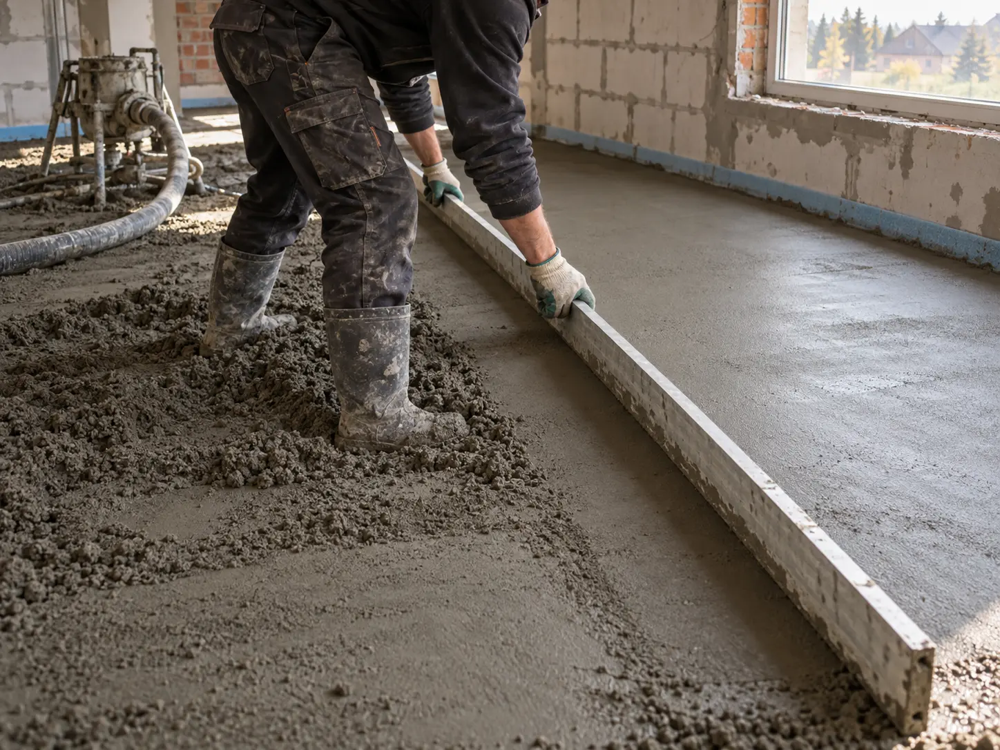

Выравниваем
по лазерному уровню
Контролируем плоскость перед укладкой напольного покрытия.
↗ПОЛУСУХАЯ СТЯЖКА / ПОД КЛЮЧ
Полусухая стяжка в Гомеле и области. Материалы, доставка и работа включены в стоимость.
Раствор готовим на улице и подаём по шлангу. В доме меньше грязи, лифт остаётся свободным. Привозим материалы, выполняем работу и убираем за собой.
лет опыта бригады
до этого объёма за день
гарантия на работу
довольных клиента по данным компании
Контролируем плоскость перед укладкой напольного покрытия.
↗Используем цемент М500, мытый песок крупной фракции и полипропиленовое фиброволокно.
↗Согласовываем сроки, консультируем по уходу за полом и отвечаем за результат.
↗
Обычно делаем стяжку на объекте за один день. Точный срок зависит от площади и условий работы.
Запросить замер ↗Уточняем детали, приезжаем на бесплатный замер, согласовываем цену и сроки, заключаем договор.
Очищаем основание, укладываем гидроплёнку и демпферную ленту, выставляем маяки по лазеру.
Подаём раствор по шлангу, выравниваем поверхность по маякам и шлифуем оборудованием.
Вы принимаете результат. Мы вывозим мусор и оборудование и объясняем, как ухаживать за стяжкой.
Выберите тип помещения и площадь. Покажем ориентир по опубликованному прайсу. Точную сумму согласуем после замера.
80 м² / от 17 руб/м²
Итог зависит от площади, толщины слоя, этажа и расположения объекта. В указанные цены входят работы, материалы, доставка и подъём на этаж.
* Цены «от» с easypol.by. Точную смету подтвердим после обсуждения и замера.
При необходимости можно обсудить дополнительные работы на вашем объекте.
Узнать подробнее ↗Собрали ответы на вопросы, которые чаще всего возникают перед заказом.
Задать свой вопрос ↗Работы, материалы, доставка и подъём на этаж. Окончательная цена зависит от площади, толщины слоя, этажа и местоположения объекта.
Большинство объектов выполняем за один день. Производительность бригады — до 400 м² в день.
Цемент марки М500, мытый песок крупной фракции и полипропиленовое фиброволокно.
В Гомеле и Гомельской области. Работаем в квартирах, домах, офисах, торговых и промышленных помещениях, на складах и других коммерческих объектах.
Срок зависит от толщины, влажности и температуры. Финишное покрытие обычно укладывают через 30 дней; для плитки ориентир — не ранее 2–3 недель. Условия конкретного объекта обсудим отдельно.
Обычно через 12 часов, без ударной нагрузки и складирования материалов. Для ухода важно не пересушивать поверхность: после укладки её рекомендуется закрыть плёнкой.
Минимальная толщина полусухой стяжки — 40 мм. Укладка возможна при температуре воздуха не ниже +5 °C.
Режим прогрева можно включать через 20 дней. Полную мощность — через 1,5–2 месяца.
Сначала штукатурка стен, затем стяжка. Так можно установить демпферную ленту к ровной стене и получить правильное примыкание.
Плоскость проверяют правилом длиной 2,5–3 м в нескольких направлениях, горизонтальность — длинным уровнем. Поверхность должна быть без очевидных бугров и впадин.
Бригада из 3–4 человек с материалами и оборудованием.
Расскажите о площади и типе помещения. Обсудим работы и договоримся о бесплатном замере в Гомеле или области.
+375 (33) 630-79-46 ↗